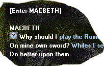
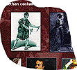

The Media used
The Media used
Pages maintained by Chris Jennings
Last updated:30/11/98
The Text
- The Play
The Alexander Editions of the Shakespeare plays are published by HarperCollins and this text was provided in electronic form. The play itself included tags used by the printers and so some processing was necassary to remove these unwanted tags. It was decided to use the text in a 'non-scrolling' form and so once the design had been fixed, the pages were marked up and so delivered to the screen in manageable chunks.
- The Hypertext
In the book editions footnotes and commentary are printed on the left hand page. This text is also provided electronically and is then 'attached' as hypertext to the words within the play. Where the footnotes refer to paragraphs or sections, an icon is built into the text for interaction.
- Searching the play
A facility to search for a word in the play is included, and this builds up a list of the occurences of that word in the play. The users can then jump to that place in the play to see the context.

- Synchronisation with the Audio
The words of the play appear one screen at a time in synchrony with the audio performance of the play. If the audio is paused the pages of text will not move forward until the user clicks the mouse over the page turning triangles.
- Supplementary Text
The majority of the other text on the CD-ROMs was written by the editors at HarperCollins (Rebecca Lloyd, Domenica de Rosa and Helen Clark). Some text was also specially commissioned for the section on 'Critical Opinions'. The supplementary text also included audio links to the play, so for example. if the text refers to a character speaking certain lines, then this can be heard when the words (in blue) are clicked on.
The Audio
- The Play
HarperCollins was able to provide DAT tapes of the performance used in the HarperCollinsAudio productions and these were digitised and divided into discrete files for each of the scenes.- Why didn't we use the audio from the video?
We thought about this but we found that the perfotmance includes many silences and moments when swords are clashing or feet are shuffling.- Syncronisation with the text
Some cutting was necessary where the music began the scene because this interfered with the synchonisation with the text. Generally, the actors speak the same text as appears on the screen, although there are places where lines are missed or in one case where the actor repeats about three lines. This was edited out!- Extracts from the play
The audio of the play is continually referred to in the supplementary text. If a reference to a character speaking certain lines is made, then those lines will be heard when the user clicks over the blue words.- Audio Archives
There are many clips of audio taken from the BBC Radio archives. These were provided on audio casettes. Locating the appropriate extract was done by Domenica de Rosa at HarperCollins using a domestic cassette player. I don't think there was any alternative method but using the counter on a cassette recorder is NOT the most accurate system!
Images
- Database of Images
Picture research was done on the basis of 'let's see what we can find about Shakespeare and Romeo & Juliet'. Visits were made to the Shakespeare Birthplace Trust and Birmingham Shakespeare Centre. Picture Libraries, such as The Mary Evans Picture Library and Hulton Deutsch were consulted and after several enjoyable trawls through masses of stuff by the editorial team, the decisions were made.
- Images are displayed in miniature throughout the supplementary text. When clicked upon, they enlarge to almost fill the 640x480 pixel space of the screen.
Part of the screen showing the images in miniature.
- Backgrounds
Some pictures were hunted down for the specific needs of the backgrounds to the play and the supplementary material. Examples would be the old engravings of Verona and Mantua for the backgrounds to the play, and the image of the Globe Theatre for the background to the acts and scenes of the play.- Captions
Each of the images is linked to a caption database which contains a short and a long (up to 255 characters) caption. The short caption is displayed in the window title bar for the picture, the long caption is displayed when the user clicks over the enlarged picture. Each of the long captions also includes a credit to the owner of that picture.- Character Images
Within the CD-ROM performance of the play, the characters appear as stills on the right hand side of the stage. These stills are taken (mostly) from the video of the play. These character images also appear on the characters selection screen and many of the key players are also included on the main menu screen.click to enlarge
- Photos of Commentators
For each of the audio archive contributors, we tried to find a photograph in the BBC Picture archives. Where this wasn't possible we used the BBC Microphone.
- Copyright
We hope that all the copyrights of all the images have been cleared.The publishers have certainly tried to clear ALL rights. If anyone knows of any image not cleared for any reason then please contact me. Some picture libraries and owners of images are nervous of electronic publishing and are beginning to ask for assurances that images will not be provided in high resolution . Some are even asking that the images be encrypted. The images on these CD-ROMs are only available in a resolution of 72 dpi. Only some of the images are encrypted. Personally, I don't believe anyone is likely to copy the images and then reproduce them again, if they do, they are infringing the publishers' copyrights.
Video
All video material was provided by the BBC. Mostly we viewed VHS copies of broadcasted tapes although I did make a trip to BBC Centre to view a black and white celluloid of a 60's performance. The tapes were provided time coded and we were then able to specify which sections should be digitized.
- The digitization
The video was digitized using Indeo Video for Windows.- Why didn't we include the whole video performance on the CD-ROM ?
the CD-ROM does not have enough data space (650 MB) to accomodate a 3 hour video, even using the small window.
Clearing and paying for the rights on such material is expensive
Linking the video to the text is not only technically very difficult, it is difficult for the users to perceive both at the same time.- Video of the Plays
The extracts from the videos of the plays were digitized at a frame rate of 15 fps using a 240x180 window. The window for the video appears in the place of the characters on the right hand side of the screen.- Synchronisation with the text
We found it impossible to synchronise the video with the text. As the software changes to the next page of text so there was a momentary but noticeable blip in the video. We abandoned the idea and so the selection of the video clip simply 'rewinds' the text to the starting point of that video extract.- Supplementary Video
The BBC provided us with several programs that made mention of Shakespeare or one of the chosen plays. It was decided to construct the screens with the first frame of the chosen clip. We decided to use the smaller window size of 160x120. See an example of how this was used. Much use was made of this video in the section on the Life of Shakespeare.Pages maintained by Chris Jennings
Last updated:19/3/02


{kind=link}
{kind=link}
{kind=link}
{kind=link}
{kind=link}